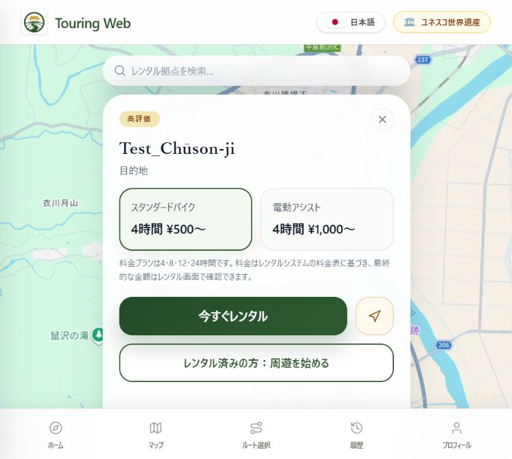
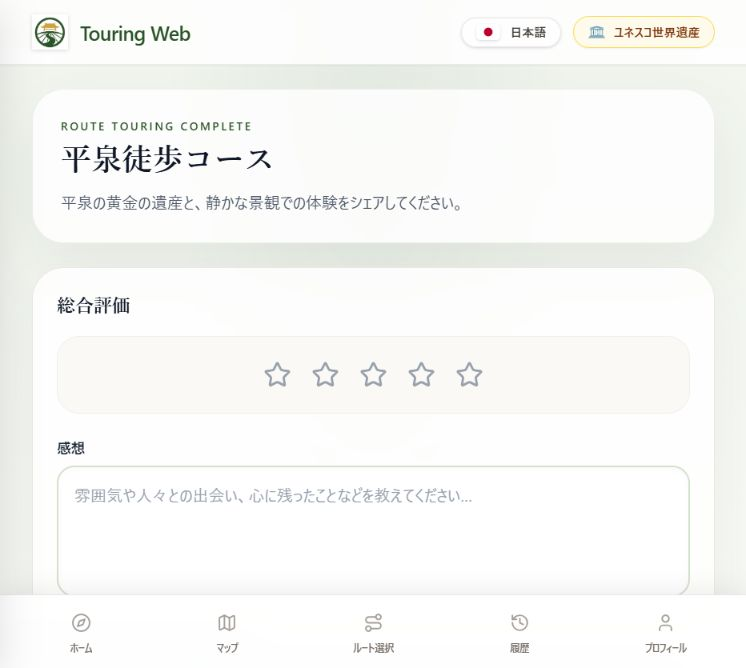
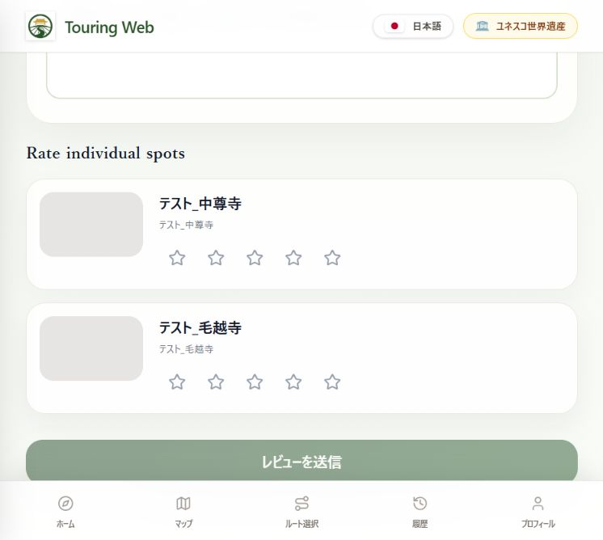

E-1
テスター／Web
対象車両を選び、利用開始後の暗証番号を確認する
レンタルWebで対象の自転車と料金プランを確認し、支払いを進めます。利用開始後、「マイレンタル」の対象車両に表示される「ロックボックス暗証番号」を確認します。
画面内の車両名・番号・金額は表示例です。実際の利用では、対象車両の最新表示を確認してください。
貸出前に、本人確認済みであることと、その他の貸出条件を満たしていることを確認します。
英語で読む場合は、ブラウザの自動翻訳を使わず、このガイド右上の「English」を選択してください。自動翻訳によって操作名や説明の意味が変わり、意図した手順と異なる内容になる場合があります。各Webでも、サイト内の言語切替を使用してください。
Use the language selector at the top right of this guide to choose English. Do not use your browser’s automatic translation: it may change button names or instructions and misrepresent the intended steps. Use the built-in language selector on each website as well.
ルート選択から、徒歩・自転車での周遊、Web内レビュー、返却と次の貸出準備まで。
目的に合うマニュアルを開いてください。閲覧中もメニューから切り替えられます。
テストに参加する学生・ワーホリの方と管理者向けの手順書です。周遊・レンタル・返却・管理者の操作を説明します。
画像を押すと拡大できます。画像内の番号は説明用の例です。
画像は撮影時の日本語表示です。英語の画面ラベルは、この手順書内での説明用訳です。
| 英語の説明 | 画像内の表示 |
|---|---|
| My Rentals | マイレンタル |
| Lockbox code | ロックボックス暗証番号 |
| Return photo | 返却写真 |
| Confirmation and payment | 確認と決済 |
| Complete | 完了 |
対象：担当者に指定された日程のテストに参加する学生・ワーホリの方。テスターはスマホ、管理者はスマホまたはPCを使用します。
担当者から、その日のルート・徒歩／自転車の区分・集合場所を確認します。困ったときの連絡先は「相談先・連絡方法」を参照してください。
スマホを充電し、通信できることを確認します。位置情報を使う案内に備えます。レンタルの本人確認・支払い条件は担当者に確認してください。
通常の流れ：登録 → ルート選択 → 徒歩で開始、またはレンタル・開錠 → 周遊 → 終了 → Web内レビュー → 履歴確認 → 自転車返却 → 実施結果Report。徒歩でも実施結果を報告します。システムの不具合・改善提案は不具合・改善レポートにも記録します。
この章では登録・ログインを説明します。担当者から案内されたアカウントを使用し、ログインできない場合は担当者へ相談してください。パスワードは安全に保存してください。初めて登録する場合はB-1、登録済みの場合はB-2に従います。
この章では指定ルートと移動手段を選びます。ルート名に「Test」が含まれるだけで指定ルートと判断せず、担当者の指示と照合してください。徒歩は選択後にFへ、自転車はD・Eを終えてからFへ進みます。
「自転車を借りる」で表示される案内の「今すぐレンタル」を押し、Dへ進みます。徒歩の場合はFへ進みます。貸出・開錠後は周遊Webへ戻り、「レンタル済みの方：周遊を始める」から周遊へ進む流れです。貸出後の復帰動作は付記の確認対象です。

自転車を利用する方が対象です。徒歩のみの方はこの章を省略します。レンタルWebでの新規登録は行わず、登録済みアカウントを使います。
レンタルWebの「ログイン」で登録済みのメールアドレス・パスワードを入力し、上部メニューの「本人確認」を開きます。承認済みの場合は「プロフィール」で確認状況を確認します。
「書類の種類」で使用する書類を選び、「本人確認を始める」を押します。確認できた選択肢は、パスポート・運転免許証・マイナンバーカード・在留カード・その他です。「その他」で受付できる書類は担当者に確認してください。
「本人確認が承認されませんでした」と表示された場合は、表示された案内を読み、より鮮明な身分証とセルフィーの再提出に進みます。初回申請では見出しが異なる可能性があります。提出部分は文章のみで説明しています。
年齢帯・国籍／国／地域・訪問者区分を確認して選びます。訪問者区分の選択肢は、海外からの観光客・国内からの観光客・地元住民・シェアハウスメンバーです。すでに選択されている場合も、自分の情報と合っているか確認してください。
画面には、これらの情報を地域観光の統計（DMO報告）や観光・事業分析の集計に利用することと、「次へ」で同意した扱いになることが記載されています。内容を確認し、同意する場合に進みます。判断できない場合は担当者に確認してください。
選んだ書類に対応する撮影案内を読み、「タップして身分証を撮影」を押して案内に従います。以下はマイナンバーカードの場合の説明です。
マイナンバーカードは、顔写真・氏名がある表面のみ撮影します。個人番号のある裏面は撮影しません。白っぽい机などに平らに置き、指で持たず、カードを大きく写します。反射を避けるため少し斜めから撮るよう画面で案内されています。
画像を撮影・選択するまで「次へ」は押せません。必要な面が鮮明に写っているか、画面の案内に沿って確認してください。
身分証とセルフィーを、画面の案内に従ってご本人が提出してください。提出後はプロフィールで確認状況を確認します。
提出と承認は別の段階です。プロフィールの本人確認欄で「承認済み」「本人確認が完了しました」を確認して貸出へ進みます。提出だけで貸出できるとは判断せず、承認待ち・再提出などの表示がある場合はその案内に従います。
上部メニューの「プロフィール」を開き、本人確認欄を確認します。「本人確認が完了しました」と表示されていれば「自転車を見る」を押します。すでに承認済みの場合は、書類を提出し直す必要はありません。
詳細画面で車両名・車両ID・拠点と「利用可能」を確認します。料金表を読み、下へスクロールしてレンタルプランへ進みます。
4・8・12・24時間から、担当者の指示と利用予定に合うプランを選びます。車両・時間・表示金額を確認してから「レンタルを開始」へ進みます。画面には開始時のカード支払いと、時間超過時の追加料金が案内されています。テスト時の支払い方法は担当者に確認してください。
自転車のテスターが行う手順です。徒歩のテスターはこの章を省略します。
レンタルWebで対象の自転車と料金プランを確認し、支払いを進めます。利用開始後、「マイレンタル」の対象車両に表示される「ロックボックス暗証番号」を確認します。
画面内の車両名・番号・金額は表示例です。実際の利用では、対象車両の最新表示を確認してください。
指定された保管場所で対象車両のボックスを確認し、車両IDとボックスの表示を照合します。保管場所はDaiki Yamadaに確認してください。
出発前に管理者と車両ID、タイヤ、ブレーキ、ハンドル・サドル、鍵・ボックス、電動車の残量を確認します。異常や状態不明がある車両で出発せず、管理者へ伝えてください。
バッテリーの取外し・充電器への接続・取付は管理者が行います。利用者は行いません。この方針は本番運用でも継続します。
電動車は毎回、出発前と返却後の残量を管理者が確認・記録します。返却後の記録は充電前に行います。返却時は走行ルートや寄り道、アシストモードの変更を伝えてください。
残量20％以下になったら、返却拠点までの距離を確認してください。この残量だけを理由とする別途の報告は不要です。
不具合や電池切れで戻れない場合は、安全な場所で停止して拠点管理者へ連絡します。連絡がつかない場合の予備連絡先はDaiki Yamadaです。回収・送迎は保証していません。無理に走行を続けないでください。
当日の拠点管理者と予備連絡先を出発前に確認・保存します。SH1・2では担当管理者またはDaiki YamadaへのFacebook DMを使用します。
天候が悪化したら安全な場所で待機し、返却が遅れる・戻れない場合は連絡します。悪天候による返却遅延は料金補正の対象外です。安全を優先し、危険な状態で返却を急がないでください。
鍵・ボックスの紛失、事故、盗難は管理者へ連絡します。事故では安全確保と必要な救急・警察への連絡を優先します。補償の利用条件は担当者へ確認してください。この手順書は補償の適用を保証するものではありません。
徒歩はCから、自転車はD・Eの貸出・開錠を終えてから進みます。スマホを使うときは安全な場所で立ち止まってください。周遊終了後のWeb内レビューは、問題がなくても必ず記入します。


「Travel History」（旅の履歴）または下部の「履歴」を開き、ルート・日時・訪問記録を確認します。自転車はGの返却手順、その後Hの報告へ進みます。徒歩はHで実施結果を報告して終了します。周遊終了と自転車の返却は別の手続きです。
借りた拠点の指定場所へ返却します。SH1・2は管理者不在でも通常の返却操作ができます。正常に返却を完了できた場合は返信を待つ必要はありません。大沢温泉では管理者が受け取れる時間内に返却します。
返却操作ができない場合は車両を安全に施錠し、場所・時刻・状態の写真を残して管理者へ連絡します。通常の返却完了とは扱わず、管理者が現物・時刻を確認して例外記録を行います。鍵をかごなどへ放置しないでください。
周遊中の車両不良で利用を継続できなくなった場合、その時点より後に新たに加算された料金だけを補正します。最初の4時間が同額の場合、開始1時間で故障し3時間で返却しても料金は変わりません。バッテリー切れだけで自動的に補正するものではありません。
自転車のテスターが行う手順です。徒歩のテスターはこの章を省略します。
指定場所に駐輪し、後輪錠を施錠して鍵を抜きます。拠点の保管場所にある対応するボックスを開き、鍵を戻します。
ふたを閉めた後は番号を崩し、施錠状態まで確認します。
マイレンタルの返却操作へ進み、「返却とお支払いの確認」で写真を提出します。返却写真と追加料金を確認して、画面の確定操作を行います。
返却申請後は、画面の案内と完了表示を確認します。操作が完了しない場合は管理者へ連絡します。写真の再提出手順は現時点ではありません。
テスター・管理者とも、問題の有無にかかわらず作業・テストの区切りで実施結果Reportを提出します。完了・一部実施・中断も対象です。不具合や改善提案は不具合・改善レポートへ記入します。周遊Web内レビューは別に実施してください。
下記の既存フォームを使用します。詳しい記入方法は「報告フォーム利用マニュアル」を参照してください。緊急時の連絡をフォーム提出で代用しないでください。
報告用のメモ：発生日時、Web名、使用端末・ブラウザ、ルート名、直前の操作、期待した結果、実際の結果。可能なら個人情報や暗証番号を含まない画面を残してください。
不具合・改善提案の記入方法を見るMessengerで相談した場合も、同じ不具合・改善点を不具合・改善レポートに記録してください。
両フォームではメールアドレス、実施日、タスク、実施回数、対象を揃えます。報告日は実施日と区別してください。不具合・改善提案は原則1件ずつ記入し、同じ作業内の同じ症状はまとめます。
不具合報告は走行中に入力せず、安全な場所で行います。報告の訂正・記入方法はDaiki Yamadaへ相談します。Messengerで相談済みでも必要なフォーム報告を行ってください。
実施結果の記入方法 · 不具合・改善提案の記入方法 · 報告フォーム利用マニュアル / Reporting Form Guide
出発前に開閉方法を確認し、車両の返却場所とボックスの保管場所はDaiki Yamadaに確認してください。
相談先：Daiki Yamada（Facebook Messenger）
作業を続けられない、手順が分からない、報告内容を訂正したい場合は、Facebook Messengerで個別メッセージを送ってください。名前・担当タスク・困っていることを簡潔に伝え、必要に応じて写真を添えてください。
下のリンクで本人のプロフィールを確認し、Messengerから連絡してください。連絡方法はオリエンテーションでも確認してください。
不具合・改善点は、Messengerで相談した場合も不具合・改善レポートに記録してください。報告先・記入方法は、担当者から案内されたものを使用してください。問題がなければ別途の不具合報告は不要です。 実施結果Reportは問題の有無にかかわらず提出します。
Daiki YamadaのFacebookプロフィールを開く ↗ボタンで開けない場合は、下のURLをコピーしてChrome・Edge・Safariなどのブラウザのアドレス欄に貼り付けてください。Facebookからログインを求められた場合は、ご自身のアカウントでログインしてください。
URL欄を押すと全体を選択できます。プロフィールを開いた後、Messengerのメッセージ機能から連絡してください。
このHTMLは画像を内蔵しています。このHTMLには画像と5種類のマニュアルを内蔵しています。このファイル1つで説明を閲覧できます。外部フォーム・Webの利用にはネット接続が必要です。
印刷・PDF保存の対象は、現在選択しているマニュアルと言語の内容だけです。
利用者の返却申請を受けてから、現物確認・番号変更・次の貸出準備を行う手順です。利用者の操作は「テスター向け」で確認できます。
画像を押すと拡大できます。画像内の番号は説明用の例です。
画像は撮影時の日本語表示です。英語の画面ラベルは、この手順書内での説明用訳です。
| 英語の説明 | 画像内の表示 |
|---|---|
| Rentals | レンタル |
| Code update | 暗証番号更新 |
| Current dashboard setting | 現在のダッシュボード設定 |
| New lockbox code (4 digits) | 新しいロックボックス暗証番号（4桁） |
| Update code and make available | 暗証番号を更新して利用可能にする |
| Awaiting reset | リセット待ち |
| Available | 利用可能 |
担当者から拠点・使用アカウント・テスト車両・役割交代のタイミングを確認し、指定されたアカウントで1拠点管理Webへログインします。
以下は番号変更の画像付き手順です。現物確認・点検・必要な充電を完了してから利用可能に戻します。
問題の有無にかかわらず実施結果Reportを提出し、システムの不具合・改善提案は不具合・改善レポートにも記録します。
利用中もボックスとワイヤーは拠点の指定場所に保管します。利用者は携行しません。具体的な場所はDaiki Yamadaに確認してください。
返却車両・鍵・ボックス・写真を確認したら、点検マニュアルへ進みます。清掃・点検・必要な充電と記録を済ませ、再貸出条件を満たす場合だけ、この手順書の手順02へ戻ってください。異常・未完了・状態不明の場合は貸出を止め、責任者へ相談します。
簡易点検マニュアルを開くこの段階では更新ボタンを押しません。先に実物の暗証番号を手動で変更し、開閉を確認します。操作方法は、この後の手順03〜06で説明します。実物の確認後、手順07でWebへ登録します。
ふたを開き、内側の「RESET」と書かれた部品の横にあるレバーを確認します。
Webへの入力には、この実物に設定した番号を使います。Webだけを書き換えても、実物の番号は変わりません。
点検・清掃・必要な充電と、実物の番号変更・鍵収納・ボックスの指定場所への保管確認が完了していることを確認してください。未完了・異常・状態不明の場合は「利用可能」に変更しないでください。
再貸出条件を確認する更新後、「暗証番号更新」の待ち件数が減り、対象が一覧から消えることを確認します。続いて利用者側の自転車一覧でも、対象車両の表示を確認します。
| 項目 | 注意・確認事項 | 運用方針 |
|---|---|---|
| 返却後の確認 | 画面の完了表示だけで現物確認済みと判断しない。 | 車両・鍵・ボックス・駐輪場所・写真を実際に確認する。 |
| 返却写真 | 自転車以外の画像は返却写真として使わない。 | 対象車両・指定場所・施錠状態を確認し、不備と現物確認結果を記録する。 |
| 番号更新 | 実物を変更した後にWebへ登録し、利用可能へ切替。 | 現物確認・点検・必要な充電・番号変更を完了してから再貸出する。 |
| 管理者不在 | 不在時の連絡先と対応担当者を事前に確認する。 | 新規貸出は不可。進行中の利用の返却申請は受け、確認待ちとして扱う。 |
| 料金終了時刻 | 料金終了時刻のシステム上の扱いは担当者に確認する。 | 利用者の返却申請時刻を基準とする。未返却・誤った場所への返却などの例外は、状況・時刻・根拠を記録し、責任者へ確認する。 |
これは現場確認用の項目一覧です。このHTMLにはチェック結果や作業記録を保存する機能はありません。
相談先：Daiki Yamada（Facebook Messenger）
作業を続けられない、手順が分からない、報告内容を訂正したい場合は、Facebook Messengerで個別メッセージを送ってください。名前・担当タスク・困っていることを簡潔に伝え、必要に応じて写真を添えてください。
下のリンクで本人のプロフィールを確認し、Messengerから連絡してください。連絡方法はオリエンテーションでも確認してください。
不具合・改善点は、Messengerで相談した場合も不具合・改善レポートに記録してください。報告先・記入方法は、担当者から案内されたものを使用してください。問題がなければ別途の不具合報告は不要です。 実施結果Reportは問題の有無にかかわらず提出します。
Daiki YamadaのFacebookプロフィールを開く ↗ボタンで開けない場合は、下のURLをコピーしてChrome・Edge・Safariなどのブラウザのアドレス欄に貼り付けてください。Facebookからログインを求められた場合は、ご自身のアカウントでログインしてください。
URL欄を押すと全体を選択できます。プロフィールを開いた後、Messengerのメッセージ機能から連絡してください。
このHTMLは画像を内蔵しています。このHTMLには画像と5種類のマニュアルを内蔵しています。このファイル1つで説明を閲覧できます。外部フォーム・Webの利用にはネット接続が必要です。
印刷・PDF保存の対象は、現在選択しているマニュアルと言語の内容だけです。
毎回の貸出準備用｜全6項目
清掃・点検中は「メンテナンス中」にします。異常がある・判断できない場合は、貸し出さず責任者へ相談してください。
メーカー指定の定期点検は別途行います。図は作業イメージです。実車の形状や操作は車種ごとの取扱説明書で確認してください。
自転車をひと回り見て、前後タイヤの空気・傷・異物、車体や車輪の破損を確認します。
画像を押すと拡大できます。
明らかな破損や異物がなく、タイヤがつぶれていない。
空気不足なら実車指定の空気圧に合わせます。傷・変形・空気漏れの疑いがあれば貸出停止。
図は確認箇所のイメージです。車輪を取り外す必要はありません。
詳しい手順を見る →自転車に乗らず、片方ずつ握って、軽く前へ押します。
画像を押すと拡大できます。
前後それぞれのブレーキが効き、軽く押した車体を止められる。
効きが弱い・レバーがグリップに当たる・違和感がある場合は貸出停止。
前後のレバーの対応は実車で確認します。両方を同時に握らず、片方ずつ確認してください。
詳しい手順を見る →車体を支え、ハンドル・サドルに軽く力をかけ、取り付け部分を確認します。
画像を押すと拡大できます。
取り付け部分がぐらついたり、ずれたりしない。
自己判断で締め直さず、貸出停止して責任者へ相談します。
ハンドルが通常の範囲で左右に向きを変える動きと、取り付け部分のぐらつきは区別してください。
詳しい手順を見る →グリップ・レバー・サドルや目立つ汚れを拭きます。ライト、ベル、反射器、鍵・ボックスを確認します。ボックスは自転車に付けず拠点の指定場所に保管し、場所はDaiki Yamadaに確認します。
画像を押すと拡大できます。
接触部分が清潔で、必要な付属品がそろい、ライトが点灯し、ベルが鳴る。
不足・破損・動作不良を記録し、貸出停止して相談します。
固く絞った布で拭き、水を直接かけないでください。図は付属品の確認イメージで、取付位置を示すものではありません。
詳しい手順を見る →毎回、出発前・返却後の残量を確認・記録 → 返却後は充電前に記録 → 20％以下またはそれに近い低残量表示なら管理者が充電 → 取付後に固定確認。
画像を押すと拡大できます。
必要な充電が完了し、バッテリーが確実に固定され、異常がない。
充電未完了なら貸し出しません。破損・異臭・異常表示などがあれば使用・充電を中止して相談します。
充電中は「充電中」にします。取外し・充電器への接続・取付は管理者が担当し、車種に合った手順と充電器を使用します。
詳しい手順を見る →当面の運用基準は残量20％以下で充電です。％表示がない車種は20％相当またはそれに近い低残量表示を目安にします。ランプ数を一律に％へ換算しません。20％を超えていても次の貸出に十分か確認し、判断できない場合は貸出を止めて担当者へ相談します。分かりにくい表示は不具合・改善レポートへ報告してください。
図は作業の流れを示すイメージです。取り外し・接続・固定の形状は車種で異なります。必ず対応する充電器と車種別の手順を使用してください。
以下は大沢温泉のフロンティアDX用です。SH1・2は別車種のため、同じ構造・操作と決めつけず、現物の説明書または担当者に確認してください。メーカー抜粋の英語図は非公式訳です。
管理者が電源OFFを確認して作業します。バッテリーを支えながら解錠し、左側へ傾けて取り外します。図の順序と注意を確認してください。
充電中に異音・異臭・煙などの異常があれば、使用・充電を中止し、安全を優先して責任者へ連絡してください。説明書の注意事項を確認してください。
上段は温度待機、中段は充電中、下段は充電完了です。青色点灯だけで完了と判断せず、バッテリー側のランプと組み合わせて確認します。
ガイドを合わせて取り付け、確実に固定されたことを引いて確認します。最後にキーを抜きます。
点検・清掃・充電の完了を確認し、実施結果Reportに記録します。
画像を押すと拡大できます。
未完了の作業や、未解決の異常がない。
未完了・不明点を引き継ぎ、「利用可能」には戻しません。
テスト管理者は毎回、走行したルートとバッテリー残量の変化も報告します。異常時の記入も管理者が行います。
詳しい手順を見る →実物の暗証番号変更・鍵収納・ボックスの指定場所への保管確認を済ませてから、Webで「利用可能」に戻します。
図は大沢温泉のフロンティアDX用です。SH1・2の車種不明のe-bikeへそのまま適用しないでください。このマニュアルのメーカー抜粋図8枚は、English表示時に非公式英訳版へ切り替わります。英訳は本テスト用に作成したもので、メーカー発行の英文説明書ではありません。画像を押すと拡大できます。
メーカー取扱説明書・仕様 / Official manual and specifications管理者が返却後の現物確認を終えたら、このマニュアルに沿って作業します。点検・清掃・必要な充電が完了しても、それだけで利用可能に戻さず、最後の「再貸出条件」を確認して管理者向けの手順02へ戻ります。日々の貸出前確認にも使用してください。
配置計画：SH1・2は各1台の車種不明e-bikeと通常自転車1台、大沢温泉はフロンティアDX2台です。各電動車に対応する充電器と充電場所を1対1で確保します。
毎日の開始時と再貸出前に、車両ID、タイヤの空気・傷、車輪・スポーク、前後ブレーキ、ハンドル・サドルの固定、ペダル、ベル・灯火・反射器、車体の異常、鍵・ボックスを確認します。空気入れは各拠点で利用できます。異常・判断不能は貸出を止めます。
フロンティアDXはメーカー取扱説明書36〜48ページを点検の根拠とします。タイヤ空気圧は実車側面表示を確認し、一律値を使いません。ブレーキ・ベルト等の調整を自己判断で行わず、責任者へ相談します。SH1・2の車種固有の手順・充電条件は車種確認後に設定します。
新規貸出は管理者が対応できるときに限ります。危険な天候では新規貸出を止め、原則として日中に返却できる計画とします。拠点の貸出停止操作と車両の整備状態は区別して扱います。
予備鍵は各車両2本あります。保管者・保管場所を責任者に確認し、車両との対応、貸出・使用者・回収を管理します。利用者用ボックスには入れません。修理店への連絡は責任者だけが行います。
終了時・交代時は、レンタル中車両、未完了の点検・充電・番号変更、鍵、異常と連絡状況を引き継ぎます。
図で部位を照合し、ブレーキシューの当たり方、摩耗、レバーの握りしろを確認します。異常がある場合は貸出を止め、調整は責任者へ相談します。
タイヤ側面の表示を実車で確認してください。図の空気圧表は説明書の例であり、すべての車両に同じ数値を適用しません。接地長は簡易的な確認方法です。
フロンティアDXの定期点検は説明書107ページに従い、初回2か月または100km、6か月・12か月、その後毎年の点検を責任者が手配します。実測と概算を区別して走行距離を把握します。
返却後の現物確認 → 清掃しながら点検 → 必要な充電・整備 → 鍵・暗証番号の再設定 → 利用可能への変更、の順で行います。清掃・点検中は「メンテナンス中」として扱います。
毎回の返却後：グリップ・ブレーキレバー・サドルの汗や水分、かごのごみ・砂、フレーム・泥よけの泥はね、ペダルの泥、ライト・反射器の汚れを取り除きます。忘れ物はごみと区別します。鍵・ボックス・ワイヤーの外側を拭き、開閉や鍵収納に支障がないか確認します。
基本は柔らかい布で乾拭きします。落ちにくい汚れは水で濡らして固く絞った布で拭きます。ボックス内部や電装部へ水・洗剤を吹きかけません。砂を強くこすりつけず、清掃しながら傷・破損も確認します。
雨天・泥汚れがある場合：タイヤ・車輪周辺の泥や異物を確認し、無理なく手の届く範囲で取り除きます。フロンティアDXのリムは油の付いていない布で泥・砂を拭きます。ベルト・プーリーの汚れは説明書に従って拭き、指や布の巻き込みに注意します。回しながら拭く作業や分解は行いません。
電動車の清掃は管理者が行います。フロンティアDXのバッテリー外装は固く絞った布、差込口のほこりは乾いた柔らかい布で扱い、金属接点を研磨しません。充電器は使用を終えて電源プラグを抜き、表面を軽く乾拭きします。SH1・2の車種固有の清掃は説明書確認後に設定し、当面は外装の拭き掃除を共通範囲とします。
毎回の清掃には、ホース・高圧・スチーム洗浄、ワックス、防錆剤、注油、分解を含めません。注油は別の整備項目として扱います。ブレーキの制動面・タイヤ・リムに油脂を付けないでください。アルコールや洗剤による一律の消毒は、この手順では規定しません。
完了基準：次の利用者が触れる部分に目立つ汚れや水分がなく、安全確認を妨げる泥・異物がないこと。微細な汚れまで完全に落とす必要はありません。ブレーキへの油付着、動作不良、除去できない異物などは「メンテナンス中」のまま貸出を止め、責任者へ相談します。清掃完了だけでは利用可能へ戻しません。
清掃の根拠：フロンティアDX取扱説明書89〜92ページ。本節の清掃頻度・分担・記録方法は、本テスト向けに定めた運用ルールです。
日常清掃は布での拭き掃除とします。図のように水道ホースやスチームで直接水圧をかけないでください。
バッテリーや樹脂カバーは固く絞った布、差込口のほこりは乾いた柔らかい布で拭きます。ベルトの泥・汚れも拭き取り、回転中の清掃や分解は行いません。
充電器は使用後に電源プラグを抜いて表面を軽く乾拭きします。リムの泥・砂には油の付いていない布を使用します。
バッテリーの取外し・接続・取付は管理者が担当します。当面の運用基準は残量20％以下で充電です。％表示がない車種は20％相当またはそれに近い低残量表示を目安にします。ランプ数を一律に％へ換算しません。20％を超えていても次の貸出に十分か確認し、判断できない場合は貸出を止めて担当者へ相談します。分かりにくい表示は不具合・改善レポートへ報告してください。
フロンティアDX：電源を切り、バッテリーを支えて説明書31〜33ページの手順で外します。専用充電器を使用し、屋内の乾燥した安定した場所、適温15〜25℃を目安に充電します。通気を確保し、覆わず、水・可燃物を避け、コード・端子・本体の異常を確認します。
フロンティアDXの青色点灯だけでは完了と判断しません。温度による待機の場合もあります。バッテリー側ランプと合わせて説明書34ページで判断します。標準充電の約4時間10分は目安で、時間経過だけで完了扱いにしません。
完了後は説明書に従って取外し・取付を行い、確実にロックされていることを引いて確認し、鍵を抜きます。異臭・異音・発煙・破損などがある場合は使用・充電を中止し、安全を優先して責任者へ連絡します。
状態：利用可能＝貸出準備完了／レンタル中＝利用中／リセット待ち＝返却後、再貸出準備未完了／充電中＝充電のため貸出不可／メンテナンス中＝点検中・異常あり・状態不明。現在使っていない「返却待ち」は対象外です。
異常がある場合は充電の有無にかかわらずメンテナンス中として扱います。充電完了だけで利用可能に戻さず、点検・鍵・ボックス・番号更新まで完了させます。操作が分からない場合は、自己判断で利用可能に切り替えず、担当者へ確認します。
管理者が電源OFFを確認して作業します。バッテリーを支えながら解錠し、左側へ傾けて取り外します。図の順序と注意を確認してください。
充電中に異音・異臭・煙などの異常があれば、使用・充電を中止し、安全を優先して責任者へ連絡してください。説明書の注意事項を確認してください。
ガイドを合わせて取り付け、確実に固定されたことを引いて確認します。最後にキーを抜きます。
上段は温度待機、中段は充電中、下段は充電完了です。青色点灯だけで完了と判断せず、バッテリー側のランプと組み合わせて確認します。
距離だけで走行可能なバッテリー残量を判断せず、実際の残量と走行状況を確認してください。
清掃前に水と必要な柔らかい布があることを確認し、不足する場合は担当者へ相談してください。
布は①接触部用（グリップ・レバー・サドル）②汚れ落とし用（フレーム・泥よけ・ペダル・ボックス外側）③リム用（油の付いていないもの）に分けます。電装部・充電器の乾拭きには、別の清潔で乾いた布を使います。
使用後は布を洗って乾かし、用途別に保管します。油や落ちない汚れが付いた布は接触部・リム・電装部に再使用せず、交換または用途を見直します。
通常の清掃は、実施結果Reportの「申し送り・作業成果」に車両IDと「清掃済み」を記録します。落とせない汚れ・異常・未完了がある場合は、箇所・状況・対応・未解決事項を追記します。車両本体の異常は貸出を止め、責任者へ連絡します。その異常だけを理由に不具合・改善レポートを提出する必要はありません。
電動自転車を利用する各テストについて、担当管理者が実施結果Reportの「申し送り・作業成果」へ残量記録を記入します。フォーム上で任意欄でも、この運用では必須です。1回の作業に複数貸出がある場合も、各貸出を区別して記録します。返却後の残量は充電前に測ります。
記入項目：実施日／拠点／管理者／車両ID／ルート名／出発前残量／返却後残量／差分／アシストモード／距離（実測・概算・不明を区別）／寄り道・異常／充電の実施内容。％とランプ数を混ぜず、同じ方法で比較します。未測定は理由を記入し、数値を推測しません。
記入例（架空）：車両ID＝例／ルート＝指定ルート名／出発90％→返却65％／消費25ポイント／モード＝オート／距離＝不明／寄り道＝なし／返却後に標準充電。ランプ表示なら「5灯→3灯、2灯減」のように記録し、％へ換算しません。
走行・残量の結果と車両本体の異常は実施結果Reportに記録します。システムの想定外の動作、説明不足、使いにくさ、改善提案は不具合・改善レポートへ報告します。両フォームを使う場合はメールアドレス・実施日・作業名・実施回・対象をそろえてください。
例外の記入は管理者が行います。車両ID・発生時刻・利用不能となった時刻・実際の返却時刻・状況・写真等の根拠・連絡先と対応・未解決事項を記録します。料金補正は故障後の新たな加算分だけとし、根拠を責任者へ共有します。
鍵紛失後は予備鍵で開いたことだけを理由に再貸出せず、メンテナンス中として責任者へ相談します。ボックス紛失時は鍵を管理者へ渡し、無人で放置しません。破損・紛失の費用を管理者がその場で確約しません。
実施結果の記入方法 · 不具合・改善提案の記入方法 · 報告フォーム利用マニュアル / Reporting Form Guide
条件を満たさない場合は戻って再貸出を進めず、貸出不可の状態を維持して責任者へ相談してください。
条件を確認して、管理者向けの手順02へ戻る作業の結果は実施結果Reportへ。システムの不具合・改善提案は不具合・改善レポートへ。
| 状況 | 実施結果Report | 不具合・改善レポート |
|---|---|---|
| 問題なく終了 | 完了＋問題・改善点なし | 不要 |
| 問題はあったが完了 | 完了＋報告状況 | 問題ごとに提出 |
| 途中で中断 | 中断＋報告状況 | システムの不具合が原因なら提出 |
| 動作は正常だが改善案あり | 完了＋報告状況 | 改善案を提出 |
両フォームで次の情報を一致させてください。テストIDを別途作る必要はありません。
共同作業では、両フォームの代表報告者をそろえてください。
同じメール・10/26・「周遊・レンタルWebテスト」・2回目・「ルートA」で、実施結果Reportを1件、不具合・改善レポートを2件送信します。不具合・改善レポート側も両方「2回目」です。
※「ルートA」は記入例です。実際は指定された名称を使ってください。
14:30頃、ルート選択後に画面をロックした。解除して戻ると、移動しても現在地が更新されなかった。画面に戻ったら現在地が更新されてほしい。
特定の実施回に関係しない改善提案は、実施回を0、具体的な対象を「全体」、実施日を気づいた日にしてください。
| 項目 | 入力内容 | 必須 |
|---|---|---|
| 端末の機種名 | 例：iPhone 15、Pixel 8。「不明」でも可。 | 任意 |
| OS・バージョン | 例：iOS 18.1、Android 15、Windows 11。「不明」でも可。 | 任意 |
| ブラウザ名・バージョン | 名前とバージョン番号の両方を記入。表示された番号をそのまま転記してください。 | 必須 |
端末やOSは設定アプリの端末情報、ブラウザは設定・ヘルプ内の「バージョン情報」「このアプリについて」などを確認します。表示場所は端末やアプリによって異なります。
バージョンを見つけられない場合はDaiki Yamada（Facebook Messenger）に相談してください。推測した番号は入力しないでください。
Webを使わない作業では、ブラウザ欄に「該当なし」と記入します。
相談先：Daiki Yamada（Facebook Messenger）
作業を続けられない、手順が分からない、報告内容を訂正したい場合は、Facebook Messengerで個別メッセージを送ってください。名前・担当タスク・困っていることを簡潔に伝え、必要に応じて写真を添えてください。
下のリンクで本人のプロフィールを確認し、Messengerから連絡してください。連絡方法はオリエンテーションでも確認してください。
不具合・改善点は、Messengerで相談した場合も不具合・改善レポートに記録してください。
Daiki YamadaのFacebookプロフィールを開く ↗フォームの質問・選択肢は日英併記です。Google標準ボタン等の表示言語は閲覧環境によって異なります。